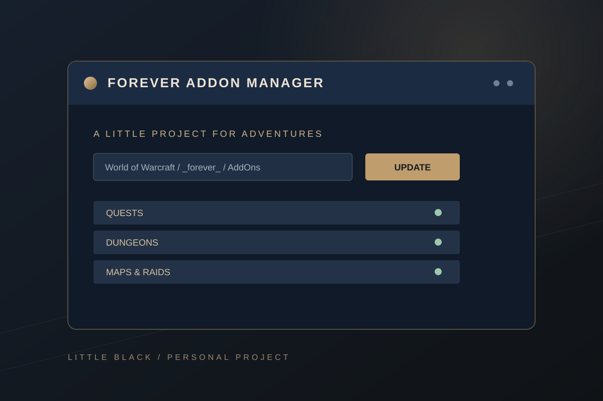

小黑的永恆插件管理器
平常和朋友玩《魔獸世界：永恆》時，整理插件做的小工具。選好遊戲資料夾，就能安裝整合清單裡的插件，之後也能一起檢查更新。
下載 Windows 版 ↓最新版本 · ZIP · 不需另外安裝 Python 或 Git
若未直接開始下載，會開啟 GitHub 發行頁。

把整理插件的時間留給遊戲
原本是想讓自己和朋友不用一個一個找插件、確認版本，於是做了這個簡單的管理器。它會從插件作者的發布來源取得檔案，也會同步小黑整理的繁中和遊戲內總入口。
安裝與更新遊戲插件
檢查所選《永恆》資料夾內的插件，更新已有項目，也會補裝整合清單裡缺少的插件。
兩種更新分開
「一鍵更新遊戲插件」處理遊戲插件；「更新管理器介面（UI）」則是在工具本身有新版時使用。
整合清單與繁中
任務助手 Questie、副本掉落 AtlasLoot、仇恨監控、DBM、地圖與路線等，方便一次整理。
保留可合併的修改
更新時比對原版與本機差異；如果無法安全合併，會顯示原因並保留現況。
怎麼開始？
- 下載 ZIP，解壓縮到桌面等可寫入的資料夾，開啟管理器。
- 選擇裡面有
_forever_的World of Warcraft資料夾。畫面會顯示插件要安裝的位置。 - 完全關閉遊戲，再按「一鍵更新遊戲插件」，等檢查與安裝完成後重新開啟遊戲。
插件會自動放到 World of Warcraft\_forever_\Interface\AddOns。更新器會保留原版 ZIP 供下次比對；請保留解壓後的管理器資料夾。
使用前知道的事
適用 Windows 10／11 64 位元及《魔獸世界：永恆》。查詢和下載需要網路；遊戲開啟時可先檢查，安裝或更新插件前請完全退出遊戲。
這是自己和朋友使用的休閒個人專案，並非《魔獸世界》官方工具。遊戲版本和插件作者的更新可能影響相容性，遇到需要處理的項目時，管理器會顯示原因。